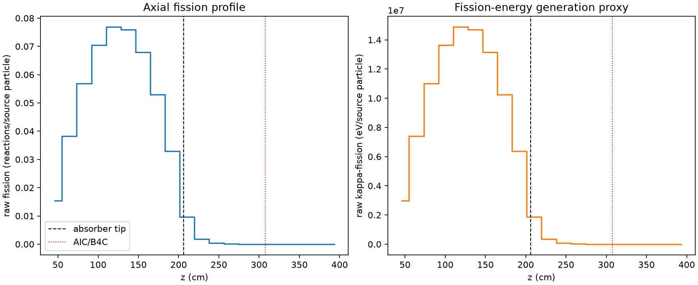
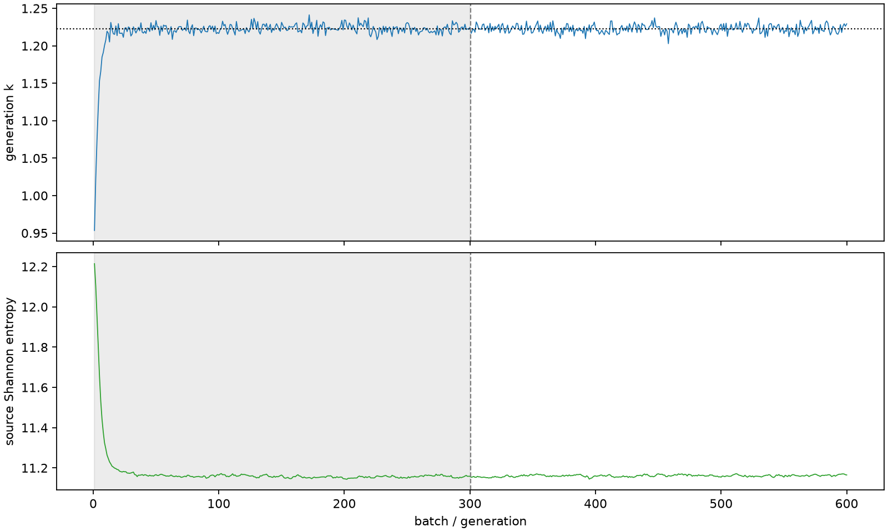

| field | value |
|---|---|
| experiment | V2-STAGE_32_OGRENCI_04-0006 |
| k | 1.2228345123244457 |
| MC standard error | 0.00018499458880383632 |
| seconds | 1466.0445583870005 |
| acceptance | not_assessed |
| convergence | review_required |
Completed is output integrity only; physical and statistical review required. Zero tallies do not prove zero production or zero uncertainty.
| diagnostic | value |
|---|---|
| geometric fuel voxels | 5280 |
| zero fission tally voxels | 833 |
| low signal fuel voxels | 1859 |
| low signal fission share | 5.014853950068016e-05 |
| low signal kappa share | 5.0175217849300116e-05 |
| important fission share | 0.9501118974061684 |
| previous filter included | 3421 |
| duration estimate s | 1562.5173488400023 |
| actual minus estimate s | -96.47279045300183 |
| fission relative MC error | statistics |
|---|---|
| all_geometric_fuel | {"voxels": 5280, "positive_mean_voxels": 4447, "zero_mean_voxels": 833, "undefined_relative_error_voxels": 833, "median": 0.012507737318851114, "p95": 0.9999999999999998, "maximum": 1.0000000000000002} |
| low_signal | {"voxels": 1859, "positive_mean_voxels": 1026, "zero_mean_voxels": 833, "undefined_relative_error_voxels": 833, "median": 0.6670173854640586, "p95": 1.0, "maximum": 1.0000000000000002} |
| important_95pct | {"voxels": 2151, "positive_mean_voxels": 2151, "zero_mean_voxels": 0, "undefined_relative_error_voxels": 0, "median": 0.006437231221024311, "p95": 0.009150101836108662, "maximum": 0.013586003310595462} |
| outside_previous_filter | {"voxels": 1859, "positive_mean_voxels": 1026, "zero_mean_voxels": 833, "undefined_relative_error_voxels": 833, "median": 0.6670173854640586, "p95": 1.0, "maximum": 1.0000000000000002} |
| kappa_fission relative MC error | statistics |
|---|---|
| all_geometric_fuel | {"voxels": 5280, "positive_mean_voxels": 4447, "zero_mean_voxels": 833, "undefined_relative_error_voxels": 833, "median": 0.01249273954478362, "p95": 0.9999999999999998, "maximum": 1.0000000000000002} |
| low_signal | {"voxels": 1859, "positive_mean_voxels": 1026, "zero_mean_voxels": 833, "undefined_relative_error_voxels": 833, "median": 0.6671011861635665, "p95": 1.0, "maximum": 1.0000000000000002} |
| important_95pct | {"voxels": 2151, "positive_mean_voxels": 2151, "zero_mean_voxels": 0, "undefined_relative_error_voxels": 0, "median": 0.006429928521777213, "p95": 0.009139659146835509, "maximum": 0.013571614812600384} |
| outside_previous_filter | {"voxels": 1859, "positive_mean_voxels": 1026, "zero_mean_voxels": 833, "undefined_relative_error_voxels": 833, "median": 0.6671011861635665, "p95": 1.0, "maximum": 1.0000000000000002} |
| axial bin | fission share | kappa-fission share |
|---|---|---|
| 1 | 0.030893443868403564 | 0.030894603908517393 |
| 2 | 0.07651448366132764 | 0.07651392103022624 |
| 3 | 0.11399513918256586 | 0.1139943210595855 |
| 4 | 0.14096198772655003 | 0.1409607711053885 |
| 5 | 0.15385349265456294 | 0.15385244206657145 |
| 6 | 0.15209469655511335 | 0.15209334358090515 |
| 7 | 0.13591198196937473 | 0.13591089760924271 |
| 8 | 0.10611156829651004 | 0.1061110530758256 |
| 9 | 0.06590149424766929 | 0.06590123798377368 |
| 10 | 0.019258158694754238 | 0.019261954858925665 |
| 11 | 0.0035093514979921037 | 0.0035108277051181113 |
| 12 | 0.0007824055199596711 | 0.0007827311206056003 |
| 13 | 0.00016848374507390262 | 0.00016855858363895915 |
| 14 | 3.3996912635016256e-05 | 3.401520578919273e-05 |
| 15 | 7.376155971835879e-06 | 7.380014367540857e-06 |
| 16 | 1.3164856388426549e-06 | 1.317836333897974e-06 |
| 17 | 4.904217239341387e-07 | 4.908584409794433e-07 |
| 18 | 8.24035648556555e-08 | 8.245336960123921e-08 |
| 19 | 5.000060820973348e-08 | 4.9943374250593056e-08 |
| 20 | 0.0 | 0.0 |
Histories include the inactive-to-active transition at batch 300. kappa-fission approximates fission energy production, not total heat deposition.

